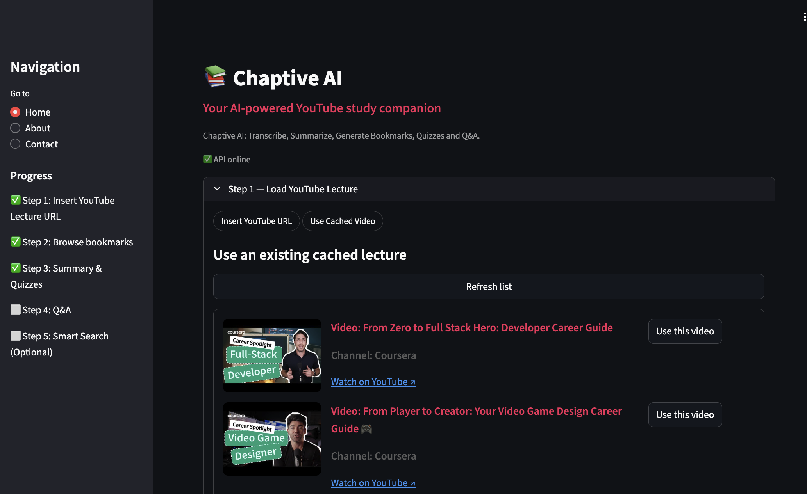
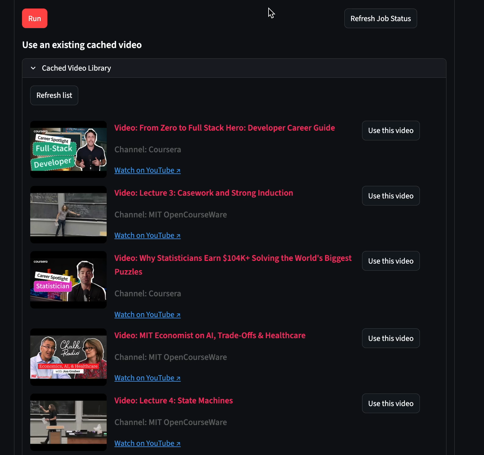
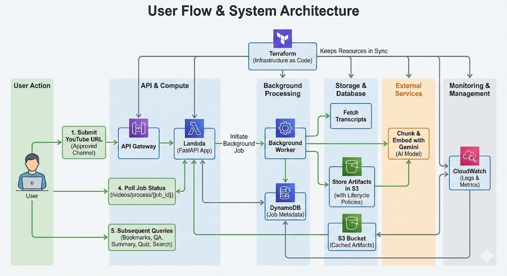

Chaptive: Conversational Learning Assistant
Chaptive ingests trusted educational YouTube channels, builds Gemini-powered embeddings, and exposes grounded search, Q&A, bookmarks, and quizzes through a FastAPI backend running on AWS Lambda. The experience surfaces lecture knowledge in seconds across web and Hugging Face Space front-ends.
Serverless AI data pipeline: AWS Lambda + API Gateway orchestrating Gemini, S3, and DynamoDB.
Problem Statement
Your YouTube Tutor Chatbot. Chaptive turns any long lecture into productive, structured learning so you can talk to the video like a tutor.
If you’ve ever:
- parked a 2-hour lecture “for later” and never made it back 😅
- lost the timestamp where the professor finally explained the key idea
- wished you could ask the video a pointed question and get an exact answer
…then Chaptive AI is for you. Educational videos are packed with value, but they’re hard to skim and easy to forget. Chaptive shrinks hours into minutes with sharp summaries, links every answer to the source moment, auto-builds chapters, and reinforces memory with instant quizzes and semantic search.
Solution Overview
Chaptive turns YouTube into a fast, interactive learning loop:
- Shrink hours into minutes with timestamp-aware transcript ingestion & smart chunking (time, paragraph, sliding window).
- Ask anything and get grounded Q&A with citations to the exact transcript moment.
- Skip the fluff thanks to auto-generated chapters, bookmarks, and focused summaries.
- Actually remember by firing off instant quizzes and semantic search refreshers before exams or meetings.
- Stay fast because caching keeps processed videos warm for every client (web, Hugging Face Space, Streamlit).
Under the hood we fetch transcripts, embed them with Gemini, store artifacts in S3, and serve everything via a FastAPI app on AWS Lambda + API Gateway managed by Terraform.
Key Features
-
Paste a YouTube URL and kickstart an asynchronous ingestion pipeline: transcripts are fetched, chunked, embedded with Gemini, and cached while you keep browsing.

Drop in any YouTube URL to preview the channel metadata, video title, and kick off ingestion with a single Run.
Alternatively, pick from cached videos for instant reuse when you need quick answers.
-
Generate video bookmarks with section titles, timestamps, and one-sentence recaps to turn a two-hour lecture into a scannable, hyperlinked timeline.

Bookmark previews animate how Chaptive slices a lecture into timestamped chapters.
-
Ask free-form questions and receive grounded answers backed by cited transcript snippets so fact-checking stays instant.

Grounded answers highlight the exact transcript lines that justified each response.
-
Spin up quizzes and executive summaries using Gemini prompts tuned for study guides, with UI sliders for difficulty and length.

Adjust difficulty and summary length, then watch quizzes and recaps generate in seconds.
- Restrict usage to approved educational channels; off-list submissions return a friendly warning plus Terms-of-Use context to keep the dataset compliant.
High-Level Architecture
User submits a video, Lambda ingests and caches artifacts, front-ends query cached embeddings for real-time answers.
Client–Server Interaction Flow
- Client sends authenticated requests to API Gateway.
- API Gateway proxies to Lambda, where Mangum boots FastAPI.
- Ingestion pulls transcripts, chunks, embeds via Gemini, and stores artifacts (
chunks.json,embeddings.npy, metadata) in S3. - DynamoDB tracks job state, TTL, and user quotas.
- Search/QA requests reuse cached artifacts; only retrieval + Gemini generation run at request time.
- Responses propagate back through API Gateway while logs/quotas land in CloudWatch and S3.
Infrastructure as Code (Terraform)
- All components (S3 buckets, DynamoDB tables, IAM roles/policies, Lambda function, API Gateway, CloudWatch logs) are codified in
infra/terraform. terraform plan/terraform applywires environment variables, concurrency, throttles, and permissions without console work.terraform state listverifies S3 helpers, IAM policies, Lambda permissions, and API Gateway stages stay aligned;terraform state showinspects configuration drift before edits.- S3 artifact buckets are versioned, private, SSE-S3 encrypted, and lifecycle-managed (current objects expire in 30 days, non-current in 7).
- Inputs such as
lambda_reserved_concurrencyorartifact_expiration_dayscan be overridden viaterraform.tfvars.
System Design Goals & Constraints
- Grounded answers: every response surfaces timestamped transcript snippets.
- Minimal footprint: single Lambda/API Gateway tier, DynamoDB for metadata, S3 for artifacts.
- Cold-start aware: all dependencies (including NLTK
punkt) ship with the Lambda ZIP. - Cost aware: PAY_PER_REQUEST DynamoDB, lifecycle S3 policies, 512 MB Lambda sized for embedding workloads.
Whitelisted YouTube Channels
Only pre-approved educational channels may be ingested to avoid redistribution of copyrighted material. The whitelist covers MIT OpenCourseWare, Stanford Online, Harvard, Yale Courses, Khan Academy, Coursera, edX, Udacity, CrashCourse, TED, TED-Ed, TEDx Talks, 3Blue1Brown, Numberphile, Computerphile, SciShow, Veritasium, MinutePhysics, Programming with Mosh, and freeCodeCamp.org. Any other channel returns HTTP 403 together with the approved list for transparency.
Data Model
- S3:
s3://chaptive-rag/<video_id>/storeschunks.json,embeddings.npy,artifacts.json, quizzes, and summaries with lifecycle expiration. - DynamoDB (ChaptiveJobs): partition key
job_idwith TTL onexpires_atfor ingestion tracking.
Backend Execution Model (AWS Lambda + FastAPI)
- FastAPI (
src/api/main.py) runs inside Lambda via Mangum; the same code runs locally withuvicorn. scripts/package_lambda.shbuilds an ARM64 ZIP in the SAM Python 3.11 container, prunes tests, bundlesnltk_data, and emitsdist/chaptive-api.zip.- The ZIP is uploaded to S3; Terraform points Lambda to the latest artifact.
- Environment variables injected by Terraform include
ENV,S3_BUCKET,LOG_LEVEL, Gemini credentials, and proxy settings.
Performance, Latency & Scaling
- Lambda memory: 512 MB, timeout: 29 s, architecture: ARM64.
- Reserved concurrency is optional; default lets AWS manage bursts.
- Artifact caching keeps online queries
O(k)wherekis the number of candidate chunks; ingestion is the heavy path but asynchronous. - Typical timings: ingestion 5–45 s (transcript fetch + embeddings) vs. search/QA <1 s once cached. Cold starts land around 2–3 s.
Concurrency, Rate Limiting & Security
- API Gateway throttling: burst 50 / steady 25 requests per second.
- Application middleware enforces
MAX_REQUESTS_PER_MINUTE(default 60) using a token bucket keyed by API key; quota events stream tos3://chaptive-rag-usage/quota-logs/. - Future HMAC verification (
chaptive-api-hmac-key) enables tamper-proof requests. - CORS middleware only accepts configured origins (Hugging Face Space or corporate domains); API Gateway stage settings mirror the same allow-list.
- All requests require API keys; unauthenticated calls receive HTTP 401.
Idempotency & Observability
- Artifacts are written to deterministic S3 prefixes (
<video_id>/<strategy>.json) so retries simply overwrite. - DynamoDB jobs reuse the same
job_id; TTL cleans up historical rows. - CloudWatch log group
/aws/lambda/chaptive-apiretains 14 days (configurable) with structured logging (request_id,video_id, severity). - Quota middleware emits JSON events to S3 for offline usage analytics.
- Terraform outputs the API URL, Lambda ARN, and secret names for observability dashboards.
Technology Stack
| Layer | Tools |
|---|---|
| Frontend clients | Hugging Face Space, Streamlit, or any HTTPS app |
| Backend | FastAPI, Mangum, Pydantic, AnyIO |
| Transcripts | youtube_transcript_api, Whisper + FFmpeg fallback |
| Embeddings & LLM | Gemini + Gemini Flash |
| Storage | AWS S3 (artifacts + Lambda ZIP), DynamoDB (jobs) |
| Deployment | Terraform, AWS Lambda, API Gateway, CloudWatch Logs |
Deployment & Packaging (S3 ZIP Workflow)
- Run
./scripts/package_lambda.shto builddist/chaptive-api.zip(manylinux/ARM64 container, pinned wheels, bundlednltk_data). - Upload the ZIP to S3 or whichever artifact bucket Terraform references.
- Apply Terraform to refresh S3, DynamoDB, IAM, Lambda, and API Gateway; the stack pulls the new ZIP and updates env vars.
API Reference & Usage
| Method & Path | Description | Request Schema | Response Schema |
|---|---|---|---|
POST /videos/process | Queue ingestion for a YouTube URL. | Query param url. | ProcessAccepted (job id + video id). |
GET /videos/process/{job_id} | Poll ingestion status. | Path job_id. | ProcessStatus (state, stats, message). |
GET /videos/{video_id}/bookmarks | Retrieve inferred sections. | Query min_sections, max_sections. | List<Bookmark>. |
POST /videos/{video_id}/qa | Ask a grounded question. | QARequest (query, limit). | QAResponse (answer + sources). |
GET /videos/{video_id}/summary | Summarize transcript. | Query max_words. | SummaryResponse. |
GET /videos/{video_id}/quiz | Generate quiz items. | Query num_questions, style. | List<QuizItem>. |
POST /search | Semantic search across cached chunks. | SearchRequest (query, video_id, limit). | List<SearchResult>. |
GET /health | Health probe. | None. | {"status":"ok"}. |
Improvement Opportunities
- Graduate ingestion from ad-hoc Lambda calls to Step Functions + SQS fan-out so multiple long videos process concurrently without throttling the API.
- Layer a managed vector database (Qdrant or pgvector) on top of the S3 cache to enable cross-video retrieval and personalization.
- Add multilingual transcript normalization and translation before embedding so non-English lectures share the same Gemini prompts.
- Build automated regression evaluation (TruLens, Ragas, etc.) to score answer quality, hallucination risk, and latency on every deploy.
- Ship proactive notifications (email, Slack, webhooks) when ingest jobs finish so Hugging Face Space users can leave the page while content backfills.
Repository & References
The demo is deployed in Hugging Face Spaces. For infrastructure walkthroughs, see the GitHub repository. For the complete project source, please reach out to me.